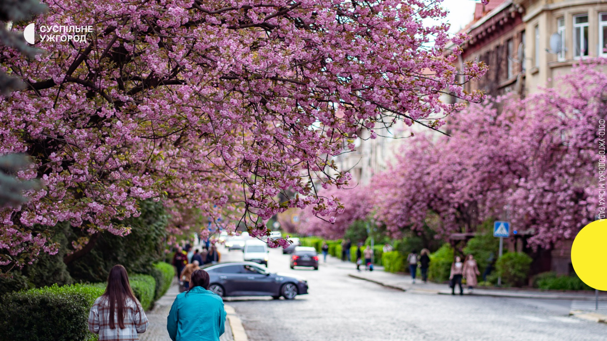
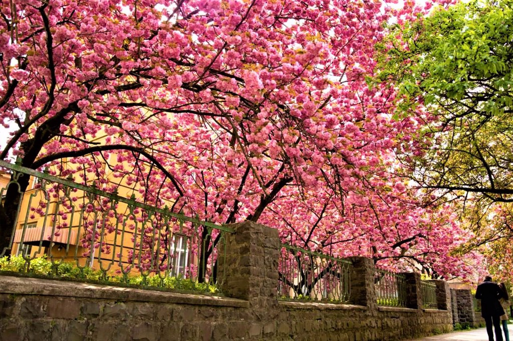
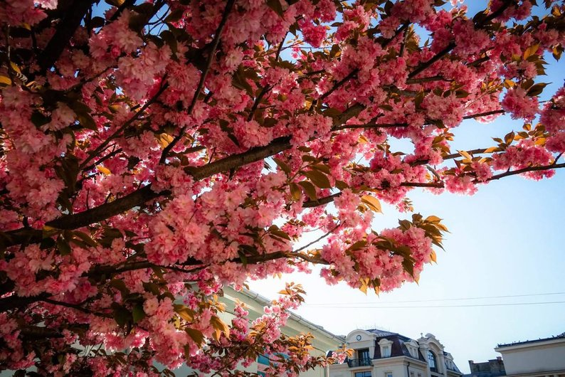

17 квітня День 1
- Відкриття фестивалю, інфостійка, старт благодійного збору
- Ярмарок, фудкорт, фотозони, інсталяції
- Мистецькі події, перформанси, дитячі активності
17–19 квітня 2026 · Ужгород
Благодійний фестиваль на підтримку ЗСУ. Приходь на фест — допоможи зібрати на дрони, генератори та старлінки. Наша сила — в єдності!
м. Ужгород · пл. Театральна · пл. Фенцика · набережна Незалежності · Міська дитяча залізниця · вул. Ракоці · пл. Поштова · Ботанічна набережна
Дивитися локації →Про фестиваль
Тут буде коротка, тепла історія фестивалю — як народилася ідея, як Ужгород об’єднується навесні, і як через красу сакур ми робимо конкретну допомогу захисникам і захисницям України.
Під час фесту збираємо кошти для ЗСУ: дрони, генератори, зарядні станції та старлінки. Наша сила — в єдності.
Програма
1 день — один блок. (Детальні години та наповнення можемо уточнити й дописати.)
Локації
Сцена · Інфостійка · інсталяція «Сакурове дерево бажань» · Фотозона
Ярмарок локальних виробників · творчі активності · фудкорт
Головна сцена · фудкорт · майданчик «Театру вогню Dragonfly» · дитячий простір
Ретро авто під сакурами
Великодня інсталяція
Еко-пікнік біля річки · Торо Нагаші — плавучі ліхтарики
Катання на дрезині · перегляд японського кіно
Пластове містечко · гаївки · Холі-фест
Сакуровий забіг
Атмосфера
Фото-карусель: гортайте вбік на телефоні або перетягуйте мишею.



Мета
Фестиваль — це не лише святкова атмосфера. Його головна мета — збір коштів для ЗСУ. Наша спільна з вами ціль — 1 000 000,00 грн на дрони, генератори, зарядні станції та старлінки для захисників і захисниць.
Організатори — Рух Підтримки Закарпатських військових. Це про довіру, відповідальність, прозорість і реальну дію.
“Краса сакур нагадує нам про життя, а наша єдність — про силу, яка допомагає підтримувати країну.”
Сакура Фест · Ужгород 2026Підтримати збір
Навіть невеликий внесок допомагає швидше закрити збір. Донатьте!
Збір: дрони · генератори · зарядні станції · старлінки
Партнери
Звітність
Тут буде прозора звітність: суми, чеки, фото-підтвердження, апдейти по закупівлях.
Поширені питання
Події проходять на локаціях по місту: пл. Театральна, пл. Фенцика, вул. Ракоці, набережні та інші.
Скануйте QR або відкрийте посилання на збір у блоці «Підтримати збір».